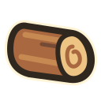
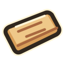
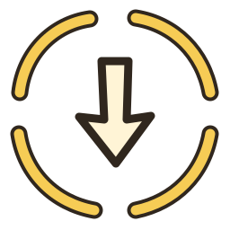
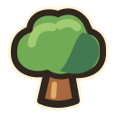
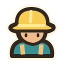
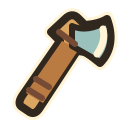
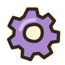
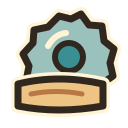
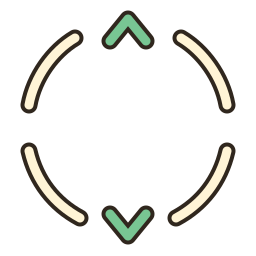

Slopfarm · kit artistique 01
Du bois, de la peinture, du relief.
Des titres flottants. Des pictogrammes épais. Un terrain calme pour laisser lire les ressources.
240

18
6SCIERIE
NIV. 2 / 43 bûches en attente




Maquette 2D · composition, pas capture du jeu14 pictogrammes originaux
Le contour brun sépare la couleur. Le liseré crème protège la silhouette sur le sous-bois.


5 matières raccordables
Chaque échantillon répète sa tuile sur deux lignes. Les touches traversent les raccords.
Lecture à taille réelle
Prérequis, résultat et points au sol
